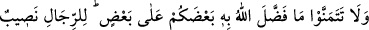
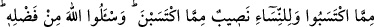
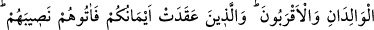
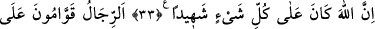
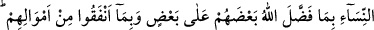
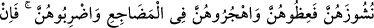
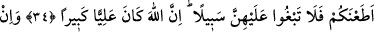
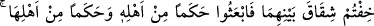
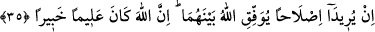

ERKEK - KADIN İLİŞKİLERİ
32- Allah’ın sizi, birbirinizden üstün kıldığı şeyleri (başkasında olup da sizde
olmayanı) hasretle arzu etmeyin. Erkeklerin de kazandıklarından nasipleri var,
kadınların da kazandıklarından nasipleri var. Allah’tan lütfunu isteyin; şüphesiz
Allah her şeyi bilmektedir.
33- (Erkek ve kadından) herbiri için ana, baba ve akrabanın bıraktığından
(hisselerini alacak olan) vârisler kıldık. Yeminlerinizin bağladığı kimselere de
paylarını verin. Çünkü Allah her şeyi görmektedir.
34- Allah’ın insanlardan bir kısmını diğerlerine üstün kılması sebebiyle ve
mallarından harcama yaptıkları için erkekler kadınların yöneticisi ve
koruyucusudur. Onun için sâliha kadınlar itâatkârdır. Allah’ın kendilerini
korumasına karşılık gizliyi (kimse görmese de namuslarını) koruyucudurlar. Baş
kaldırmasından endişe ettiğiniz kadınlara öğüt verin, onları yataklarda yalnız
bırakın ve (bunlarla yola gelmezlerse) dövün. Eğer size itâat ederlerse artık
onların aleyhine başka bir yol aramayın. Çünkü Allah yücedir, büyüktür.
35- Eğer karı kocanın aralarının açılmasından korkarsanız, erkeğin ailesinden bir
hakem ve kadının ailesinden bir hakem gönderin. Eğer barışmak isterlerse Allah
aralarını bulur; şüphesiz Allah her şeyi bilen, her şeyden haberdar olandır.